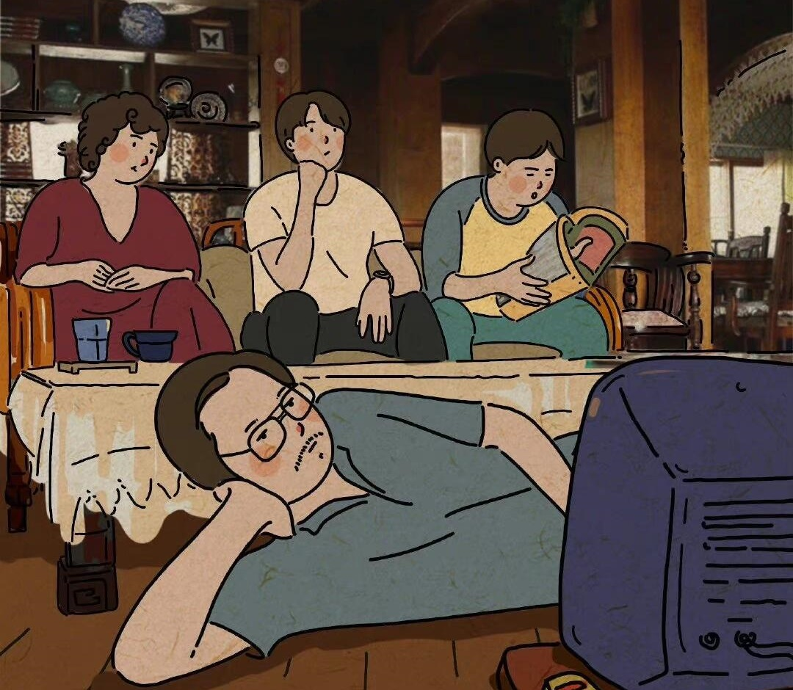
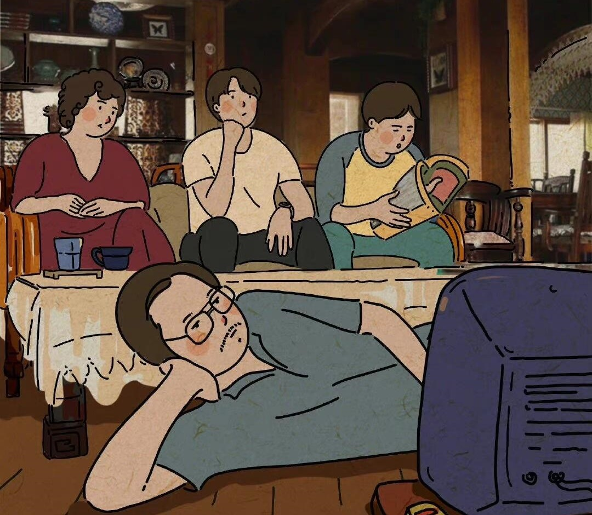

《请回答1988》
《请回答1988》是一部以1980年代末为背景的电视剧，主要讲述了1988年在首尔市道峰区双门洞居住的五家人的故事，描绘温暖的亲情、邻里街坊小市民传统的爱情与友情的故事。
既不是386时代，也不是88万元时代，但是，也有着不想被称为老一代的一女子，据说是大韩民国最多的1971年生的，45岁的成德善。1988年的德善18岁时，建国以来最大的活动“汉城奥运会”举行了，进行考查学历的1989年，柏林墙倒塌了。大学入学的1990年，MBC Radio “裴哲秀的音乐基地”开始了，对于任何人来说，我活过的时代是特别的，对于那些日子的记忆极其鲜明。